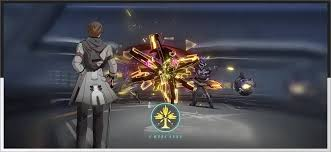
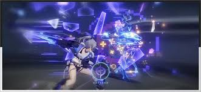
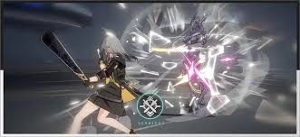
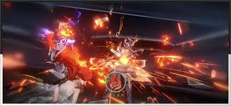
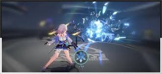
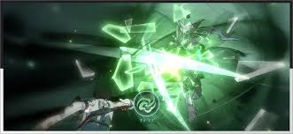
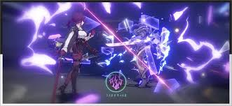

Elementos
Imaginário – Prisão: Aplica o efeito Prisão (Empurra o inimigo para trás na ordem do turno e reduz a Velocidade do inimigo)
Quântico – Emaranhamento: Aplica o efeito Entanglement (Empurra o inimigo para trás na ordem do turno e distribui Quantum DoT)
Físico – Sangramento: Causa dano físico adicional e aplica o efeito Bleed (Physical DoT)
Queimadura: Causa dano de fogo adicional e aplica o efeito Burn (Fire DoT)
Gelo – Congelado: Congela o inimigo, impedindo-o de realizar qualquer ação e aplica um Ice DoT
Vento – Cisalhamento do Vento: Causa dano de vento adicional e aplica o efeito Wind Shear (Wind DoT)
Relâmpago – Choque: Causa dano de raio adicional e aplica o efeito Choque (Lightning DoT)
